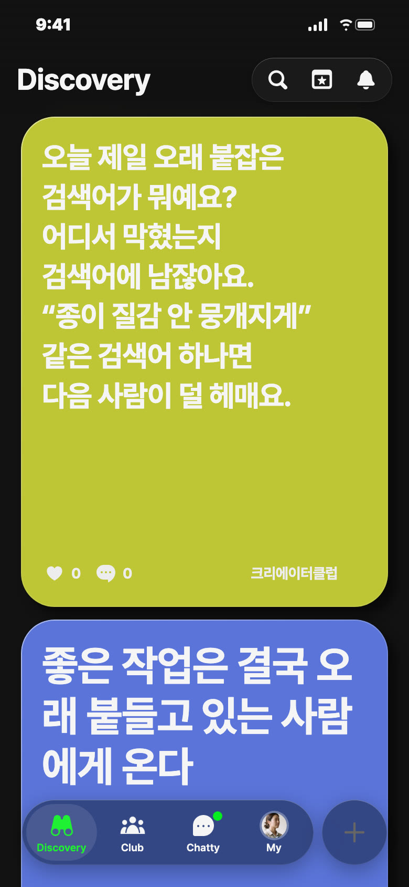
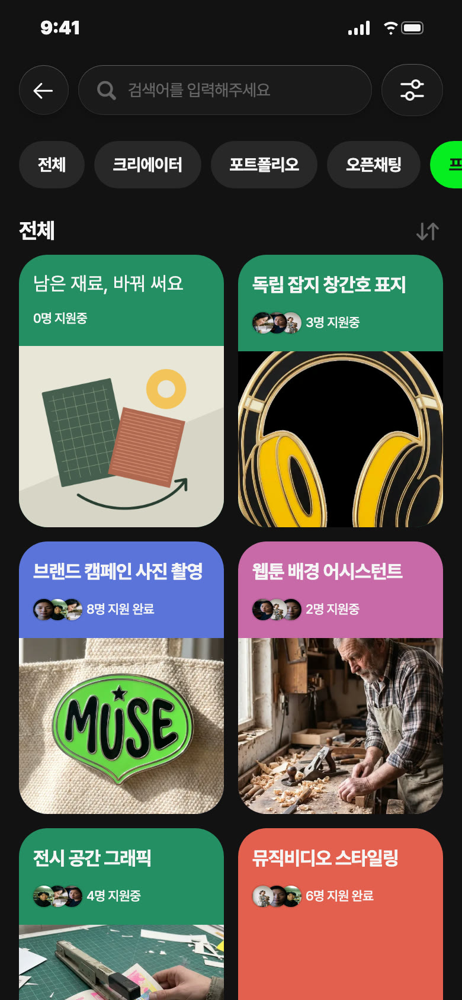
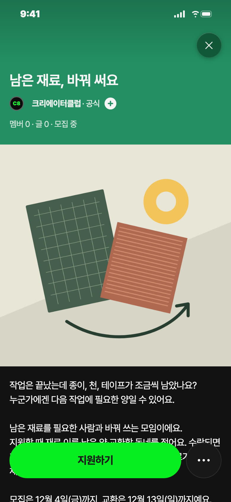
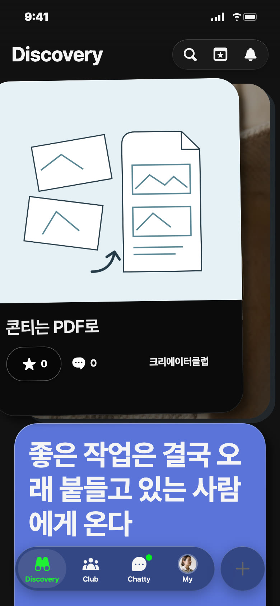
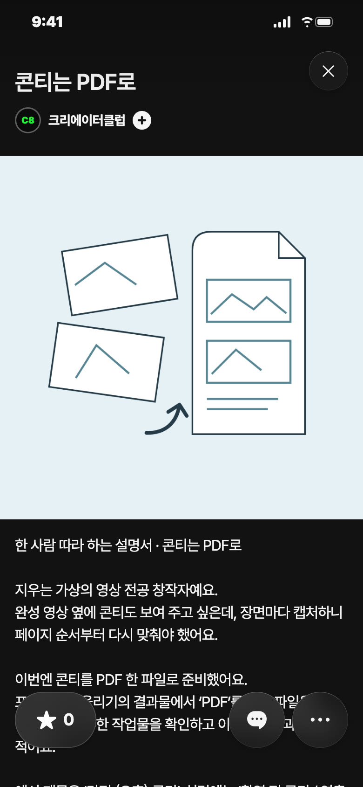

오늘은 쉬어요 · 금요일 기준에 따라 세 안 모두 비축이에요.
날짜·인물·지원 채팅은 제안 또는 가상 예시예요. 실제 모집·게시·멘션은 하지 않았어요.
C8 앱 게시 시안 · 2026. 11. 20. 금요일 · 오늘은 쉬어요

왜 지금: 작업 중 검색한 말 하나를 서로 빌려 쓰는 창작자 공감. 외주·졸업전시·프로필 질문 반복을 피함.
보낼 사람: 질감 표현에서 막힌 디자인과 친구에게
받고 싶은 댓글: 예시·가상: 저 “블렌더 유리 검게 나옴”으로 찾았어요.
참고: 검색어 예시는 젠지가 만든 가상 문구. 배경색은 앱에서 무작위로 정함.
오늘 제일 오래 붙잡은 검색어가 뭐예요? 어디서 막혔는지 검색어에 남잖아요. “종이 질감 안 뭉개지게” 같은 검색어 하나면 다음 사람이 덜 헤매요.


왜 지금: 기말 작업 뒤 남을 재료를 다음 작업에 쓰는 교환. 서로 돕기 × 재료 나눔.
보낼 사람: 천 조각이 남은 의상과 친구에게
받고 싶은 지원: 예시·가상: 면 원단 1m 남았어요. 동대문에서 교환 가능해요.
게시 전: 날짜는 제안. 지원 수락·게시판 관리할 운영자, 재료 교환 운영 범위와 26.46.0 출시 앱 확인이 필요함.
남은 재료, 바꿔 써요
종이·천·실·문구 재료가 남았거나 필요한 창작자를 찾아요. 지원할 때 재료 이름, 대략적인 양, 교환할 동네를 적어요. 사진을 확인하고 서로 동의한 재료만 교환해요.
작업은 끝났는데 종이, 천, 테이프가 조금씩 남았나요? 누군가에겐 다음 작업에 필요한 양일 수 있어요. 남은 재료를 필요한 사람과 바꿔 쓰는 모임이에요. 지원할 때 재료 이름·남은 양·교환할 동네를 적어요. 수락되면 게시판에 재료 사진과 상태를 올려요. 필요한 재료가 보이면 채팅방에서 둘이 교환 여부와 장소를 정해요. 모집은 12월 4일(금)까지, 교환은 12월 13일(일)까지예요. 처음 만날 때는 낮에 사람 있는 곳에서 만나요. 위험물·개봉한 화학 재료는 받지 않아요. 책상에 남은 재료가, 다른 사람 작업의 첫 재료가 돼요.


왜 지금: 앞편 유튜브 영상에 이어 영상 이전의 콘티를 보여 주는 PDF 기능 하나.
보낼 사람: 콘티를 한 장씩 캡처하던 영상과 동기에게
받고 싶은 댓글: 예시·가상: PDF도 되는 줄 몰랐어요. 콘티부터 묶을게요.
확인 범위: iOS 코드 PDF 선택·첨부 확인 흐름. 디자인 원본 화면을 사용하며 실기기 검수는 나나 몫.
연재: 가상 지우·작품명·장면. 표지와 PDF 첨부 확인 화면 두 장을 제작함.
콘티는 PDF로
한 사람 따라 하는 설명서 · 콘티는 PDF로 지우는 가상의 영상 전공 창작자예요. 완성 영상 옆에 콘티도 보여 주고 싶은데, 장면마다 캡처하니 페이지 순서부터 다시 맞춰야 했어요. 이번엔 콘티를 PDF 한 파일로 준비했어요. 포트폴리오 올리기의 결과물에서 ‘PDF’를 골라 파일을 첨부해요. 첨부한 작업물을 확인하고 이어서 제목과 설명을 적어요. 예시 제목은 ‘단편 〈오후〉 콘티’. 설명에는 ‘촬영 전 콘티 / 연출·콘티 지우’라고 적었어요. 작품명과 인물은 모두 가상이에요. 영상에선 지나가는 장면을, 콘티에선 한 페이지씩 볼 수 있어요.
설명서 사진 원본 두 장
사진·동영상 포트폴리오에 아래 두 장을 순서대로 붙여요.


오늘의 판단
금요일 1순위는 쉬거나 비축 하나예요. 기존 비축은 샐리가 꺼내 달라고 할 때만 다시 내므로 오늘 추천은 없어요. 별점 평가 대상 추천안이 없어 자체 별점도 집계에서 제외해요. 세 비축안은 오늘 새로 썼어요.
노출 문턱: 회원 피드 가입 회원 289명, 전날 활동자 7명. 출처: 마케팅 데일리 11/20의 가입 봇 11/19 줄. 잠재 열람 범위이며 실제 열람 수를 뜻하지 않아요. 앱 밖 직접 도달 0명, 공유 추가 도달은 아직 집계 없음.
반려 대조: 검색어는 기능 질문·회원 인용·전시 철수와 겹치지 않아요. 재료 교환은 포폴 첨삭·짝 평가 대신 재료를 교환해요. PDF 설명서는 입선 이력 편과 기능이 다르지만 같은 사용법 연재여서, 첫 편 반려 이유가 아직 없는 점을 주의 사항으로 남겨요.
쉼 결정 자체 별점은 없음. 다섯 가지 검토: 멈춤—영감 첫 두 줄에 질문, 진짜—PDF 선택·첨부 흐름 iOS 코드 확인, 사람 말—말투 기준과 AI 티 점검표 통독, 보낼 이유—각 대상과 기대 반응을 기재, 그림—세 화면과 사진 두 장 직접 확인. 게시 전 화면·기능 실기기 검수는 나나 몫이에요.
기능 참고: 크루네 지식창고 link_218419c2560af575와 최신 iOS 코드 ContentUploadWorkflowOptionPickerViews, ContentUploadPortfolioOutputSectionView. 다른 회원의 글·댓글을 인용하거나 반응 근거로 삼지 않았어요.